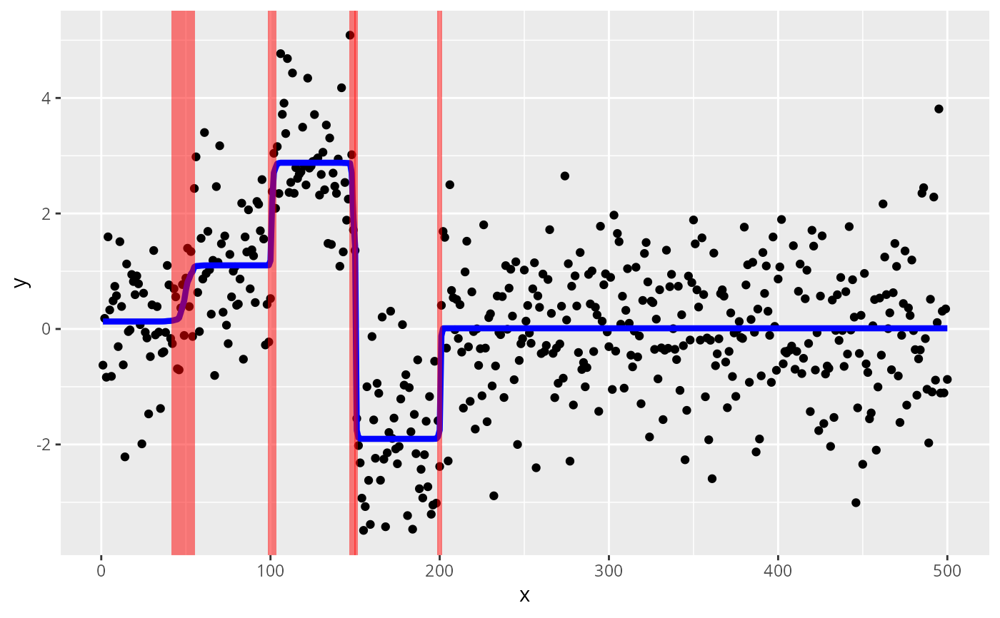

Plot changepoint data and susie fit using ggplot2
Source:R/susie_plot_changepoint.R
susie_plot_changepoint.RdPlots original data, y, overlaid with line showing susie fitted value and shaded rectangles showing credible sets for changepoint locations.
Arguments
- s
A susie fit generated by
susie_trendfilter(y,order = 0).- y
An n-vector of observations that are ordered in time or space (assumed equally-spaced).
- line_col
Color for the line showing fitted values.
- line_size
Size of the lines showing fitted values
- cs_col
Color of the shaded rectangles showing credible sets.
Examples
set.seed(1)
mu = c(rep(0,50),rep(1,50),rep(3,50),rep(-2,50),rep(0,300))
y = mu + rnorm(500)
# Here we use a less sensitive tolerance so that the example takes
# less time; in practice you will likely want to use a more stringent
# setting such as tol = 0.001.
s = susie_trendfilter(y,tol = 0.1)
# Produces ggplot with credible sets for changepoints.
susie_plot_changepoint(s,y)
#> Warning: Using `size` aesthetic for lines was deprecated in ggplot2 3.4.0.
#> ℹ Please use `linewidth` instead.
#> ℹ The deprecated feature was likely used in the susieR package.
#> Please report the issue at <https://github.com/stephenslab/susieR/issues>.
